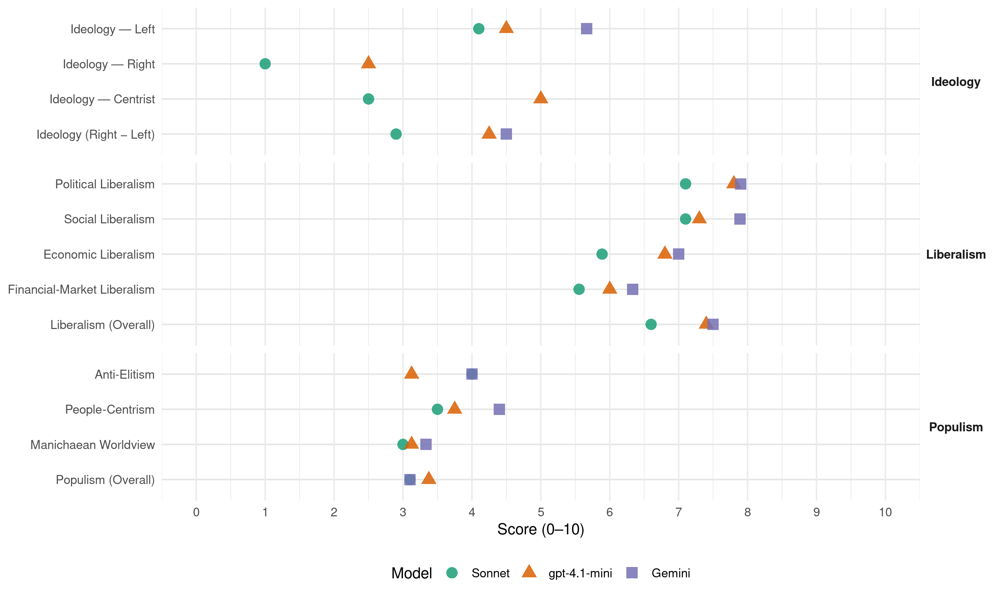

PS (Portugal, 1995)
manifesto_id 35311_199510
Get full text: This site shows derived annotations and short verbatim quotes only. The full manifesto text is © Manifesto Project / WZB — obtain it via manifesto-project.wzb.eu using the manifesto_id above.
Headline scores
| Dimension | Sonnet | gpt-4.1-mini | Gemini |
|---|---|---|---|
| Populism (Overall) | 3.1 | 3.4 | 3.1 |
| Anti-Elitism | 4.0 | 3.1 | 4.0 |
| People-Centrism | 3.5 | 3.8 | 4.4 |
| Manichaean Worldview | 3.0 | 3.1 | 3.3 |
| Ideology (Right − Left) | 2.9 | 4.2 | 4.5 |
| Liberalism (Overall) | 6.6 | 7.4 | 7.5 |
| Political Liberalism | 7.1 | 7.8 | 7.9 |
| Social Liberalism | 7.1 | 7.3 | 7.9 |
| Economic Liberalism | 5.9 | 6.8 | 7.0 |
| Financial-Market Liberalism | 5.6 | 6.0 | 6.3 |
Evidence per dimension
Economic Liberalism
Gemini · score 7.0 · verified · chunk 1
“globalização dos mercados, reforçando”
Adaptação da actuação externa às crescentes tendências para a globalização dos mercados, reforçando as ligações
Gemini · score 7.0 · verified · chunk 2
“abertura das suas economias, com processos de ajustamento estrutural”
vindo a coincidir com um processo tendencial de abertura das suas economias, com processos de ajustamento estrutural feitos à custa de pesados sacrifícios
Gemini · score 7.0 · verified · chunk 3
“facilitar a livre iniciativa, simplificando procedimentos”
A lei deve ser flexibilizada, de molde a facilitar a livre iniciativa, simplificando procedimentos e métodos
Gemini · score 8.0 · verified · chunk 4
“papel insubstituível nas complexas sociedades”
O mercado tem um papel insubstituível nas complexas sociedades actuais. É ao mercado que cabe um papel fundamental
Gemini · score 7.0 · verified · chunk 5
“ambiente de efectiva concorrência”
comércio através de instrumentos legislativos capazes de assegurar um ambiente de efectiva concorrência. O falhanço
Gemini · score 7.0 · verified · chunk 6
“defesa e promoção da Concorrência”
A defesa e promoção da Concorrência. Promover o equilíbrio e diversidade
Gemini · score 6.0 · mixed · chunk 7
“mercado constitui, e deverá continuar a ser”
Como na generalidade das sociedades democráticas, o mercado constitui, e deverá continuar a ser, um dos pilares
Gemini · score 7.0 · verified · chunk 8
“mecanismos de competição entre os prestadores públicos e privados”
hospitais e centros de saúde. a criação de mecanismos de competição entre os prestadores públicos e privados. o financiamento sustentável
Gemini · score 6.0 · verified · chunk 9
“aplicação da Lei da Concorrência”
através de mecanismos de regulação e da aplicação da Lei da Concorrência. g) Livro e Leitura Reestabelecimento
Gemini · score 7.0 · verified · chunk 10
“respeitem as regras da concorrência”
financeiro do Estado e respeitem as regras da concorrência. O Governo promoverá
gpt-4.1-mini · score 8.0 · verified · chunk 1
“A dinamização das relações económicas externas, com o objectivo de se atingir um maior equilíbrio da balança comercial”
…A dinamização das relações económicas externas, com o objectivo de se atingir um maior equilíbrio da balança comercial através da conquista de novos mercados, da captação do investimento estrangeiro e da internacionalização da economia e dos produtos portugueses deverá decorrer de uma estreita coordenação no seio do Governo…
gpt-4.1-mini · score 7.0 · verified · chunk 2
“A dinamização das relações económicas externas, com o objectivo de se atingir um maior equilíbrio da balança comercial através da conquista de novos mercados, da captação do investimento estrangeiro e da internacionalização da economia e dos produtos portugueses deverá decorrer de uma estreita coordenação no seio do Governo.”
A dinamização das relações económicas externas, com o objectivo de se atingir um maior equilíbrio da balança comercial através da conquista de novos mercados, da captação do investimento estrangeiro e da internacionalização da economia e dos produtos portugueses deverá decorrer de uma estreita coordenação no seio do Governo, de forma a se garantir o “timing” certo para a execução dessas medidas, bem como a escolha e o acesso a interlocutores adequados.
gpt-4.1-mini · score 6.0 · verified · chunk 3
“simplificação, desburocratização e eliminação de procedimentos”
…simplificação, desburocratização e eliminação de procedimentos nos actos de registo e notariado. m) aperfeiçoamento dos mecanismos e meios de prova do deferimento tácito.
gpt-4.1-mini · score 7.0 · verified · chunk 4
“política de privatizações, superando os erros que, neste domínio, foram cometidos”
O governo PS continuará, com determinação e clareza, a política de privatizações, superando os erros que, neste domínio, foram cometidos pelos governos do PSD. Eles foram incapazes de inserir a política de privatizações numa estratégia de fortalecimento do tecido empresarial nacional. A maioria das privatizações ficaram assinaladas por um conjunto de irregularidades e de falta de clareza nos processos, determinando alterações das “regras do jogo”, com intervenções administrativas e casuísticas do Estado.
gpt-4.1-mini · score 7.0 · verified · chunk 5
“políticas estruturais para a competitividade”
…orientar-se-ão na política comunitária por forma a construir uma nova trajectória de convergência com as economias mais desenvolvidas. Uma trajectória que faça da convergência nominal e da convergência real um círculo virtuoso. Uma trajectória de convergência estrutural…
gpt-4.1-mini · score 7.0 · verified · chunk 6
“a defesa e promoção da concorrência”
e) No âmbito da defesa e promoção da concorrência. Promover o equilíbrio e diversidade do aparelho comercial, bem como, a transparência e o respeito pelo actual ordenamento jurídico no exercício da actividade.
gpt-4.1-mini · score 6.0 · verified · chunk 7
“Justifica-se manter tais actuações, preservando as condições de estabilidade”
…actuações estatais nos domínios da política financeira, do fomento da actividade económica, bem como na esfera sectorial e na regional e local. Justifica-se manter tais actuações, preservando as condições de estabilidade, expansão e sã concorrência.
gpt-4.1-mini · score 6.0 · verified · chunk 8
“criar condições para progressivamente se generalizar a prescrição farmacêutica por denominação comum internacional”
…Até à separação integral entre financiadores e prestadores criar uma câmara de negociação anual de preços de serviços de saúde e favorecer o reembolso das intervenções mais custo-efectivas, à custa do sub-financiamento das com baixa relação custo-efectividade. Criar condições para progressivamente se generalizar a prescrição farmacêutica por denominação comum internacional em cuidados ambulatórios subvencionados pelo SNS…
gpt-4.1-mini · score 7.0 · verified · chunk 9
“desenvolvimento de políticas facilitadoras da inovação a nível local”
A construção da qualidade educativa exige ainda o desenvolvimento de políticas facilitadoras da inovação a nível local e de promoção da gestão responsável e participada no quadro da autonomia das escolas.
gpt-4.1-mini · score 7.0 · verified · chunk 10
“revogação da recente legislação limitativa da liberdade de imprensa”
A revogação da recente legislação limitativa da liberdade de imprensa e a elaboração de uma nova Lei de Imprensa, que garanta de forma inovadora e equilibrada a liberdade de informação e os direitos dos jornalistas, constituem assim uma prioridade.
Sonnet · score 6.0 · verified · chunk 1
“economia de mercado prevaleceram contra a alternativa comunista”
Os princípios da democracia representativa, do Estado de direito e da economia de mercado prevaleceram contra a alternativa comunista.
Sonnet · score 6.0 · verified · chunk 2
“abertura das suas economias”
restabelecimento da Democracia na maior parte dos Estados latino-americanos vindo a coincidir com um processo tendencial de abertura das suas economias
Sonnet · score 6.0 · verified · chunk 3
“desregulamentando onde não se justifique a norma”
distinguindo o essencial do acessório. desregulamentando onde não se justifique a norma. substituindo o controle prévio pela fiscalização posterior.
Sonnet · score 6.0 · verified · chunk 4
“menos dependente do Estado e dos seus subsídios”
menos dependente do Estado e dos seus subsídios. mais liberta das suas regras discricionárias e dos seus mecanismos burocráticos e clientelares.
Sonnet · score 6.0 · verified · chunk 5
“promoção da competitividade das empresas”
promoverão políticas sectoriais que terão como objectivo estruturante a promoção da competitividade das empresas e dos produtos portugueses em mercados cada vez mais globalizados e liberalizados.
Sonnet · score 6.0 · verified · chunk 6
“assegurar uma concorrência com regras”
Para o Governo do PS e para a Nova Maioria é clara a defesa de um tecido empresarial de Comércio onde coexistam, num justo equilíbrio de oportunidades todas as fórmulas empresariais, estimulando-se o desenvolvimento, assegurando-se uma concorrência com regras e promovendo-se a defesa dos interesses do consumidor.
Sonnet · score 5.0 · mixed · chunk 7
“mercado constitui, e deverá continuar a ser, um dos pilares”
Como na generalidade das sociedades democráticas, o mercado constitui, e deverá continuar a ser, um dos pilares da nossa sociedade.
Sonnet · score 6.0 · verified · chunk 8
“criação de mecanismos de competição entre os prestadores”
a criação de mecanismos de competição entre os prestadores públicos e privados. o financiamento sustentável, eficiente e equitativo
Sonnet · score 5.0 · verified · chunk 9
“verdadeiro mercado profissional da Cultura”
favorecendo o estabelecimento de circuitos estáveis de produção, circulação e consumo de bens culturais a partir dos quais possa emergir um verdadeiro mercado profissional da Cultura à escala nacional
Sonnet · score 6.0 · verified · chunk 10
“acerada concorrência imposta no mercado publicitário”
indissociável da crise económica e da acerada concorrência imposta no mercado publicitário pelos operadores televisivos
Financial-Market Liberalism
Gemini · score 7.0 · verified · chunk 1
“Comissão do Mercado de Valores Mobiliários”
independência de formulação e supervisão de políticas sectoriais ( Conselho da Concorrência, Banco de Portugal, Comissão do Mercado de Valores Mobiliários).
Gemini · score 6.0 · verified · chunk 2
“actividades de promoção junto dos organismos e instituições financeiras”
Organização Mundial do Comércio, e em actividades de promoção junto dos organismos e instituições financeiras, no sentido de se garantir o acesso de empresas
Gemini · score 7.0 · verified · chunk 4
“tributação dos rendimentos de capital”
introdução de maior equidade na tributação dos rendimentos de capital, e em particular das mais valias, em comparação com outros rendimentos
Gemini · score 6.0 · verified · chunk 5
“cooperativismo de crédito não-agrícola”
vazio legal que impede o surgimento de cooperativismo de crédito não-agrícola no nosso país
Gemini · score 6.0 · verified · chunk 6
“criação de linhas de crédito bonificadas”
criação de condições mais favoráveis no acesso ao crédito, nomeadamente pela criação de linhas de crédito bonificadas e de sociedades
Gemini · score 6.0 · verified · chunk 9
“condições favoráveis de crédito bancário”
incluindo, em colaboração com o Ministério das Finanças, incentivos fiscais e condições favoráveis de crédito bancário. Instituição do preço fixo por via
gpt-4.1-mini · score 6.0 · verified · chunk 2
“Portugal participará activamente nas áreas de negociação de acordos e outros textos internacionais, designadamente no âmbito da Organização Mundial do Comércio.”
Portugal participará activamente nas áreas de negociação de acordos e outros textos internacionais, designadamente no âmbito da Organização Mundial do Comércio, e em actividades de promoção junto dos organismos e instituições financeiras, no sentido de se garantir o acesso de empresas nacionais a concursos internacionais ou a sua participação em projectos com financiamento multilateral.
gpt-4.1-mini · score 6.0 · verified · chunk 3
“reforma financeira do Estado e da Administração Pública”
…efectivação de uma desburocratizada reforma financeira do Estado e da Administração Pública, respeitando e fazendo aplicar os princípios de autonomia financeira dos serviços, com menor peso centralizador do Ministério das Finanças.
gpt-4.1-mini · score 6.0 · verified · chunk 4
“desastrosas operações de descrédito do mercado de capitais”
As graves insuficiências e erros cometidos pelos governos do PSD, no domínio das políticas estruturais manifestam-se, com particular evidência, nas distorções graves que, de uma ou de outra forma, se verificam no funcionamento dos principais mercados. A prática generalizada da fraude e da evasão fiscais. a complacência face ao trabalho infantil. o modelo de gestão dos principais fundos comunitários ( nomeadamente os dirigidos à formação profissional. à indústria. à agricultura e ao comércio) . as sistemáticas e desastrosas operações de descrédito do mercado de capitais( desde as imponderadas declarações de Cavaco Silva em 1987, terminando nos episódios relacionados com os processos de privatizações do Totta, do BPA, e da Petrogal, a demissão do presidente da Comissão de Valores Mobiliários - constituem exemplos significativos do estado de desestruturação, distorções e de atrasos em que o Governo do PSD deixa as condições de concorrência essenciais ao bom funcionamento de qualquer economia de mercado.
Sonnet · score 6.0 · verified · chunk 1
“Comissão do Mercado de Valores Mobiliários”
Desgovernamentalização da nomeação de titulares de cargos cuja autonomia face ao Executivo é essencial… Conselho da Concorrência, Banco de Portugal, Comissão do Mercado de Valores Mobiliários.
Sonnet · score 5.0 · verified · chunk 2
“linhas de crédito a longo prazo ou linhas concessionais”
relações de cooperação empresarial vir a beneficiar de instrumentos adequados à sua promoção, como linhas de crédito a longo prazo ou linhas concessionais
Sonnet · score 6.0 · verified · chunk 3
“simplificação dos processos de aumento de capitais das sociedades anónimas”
simplificação dos processos de aumento de capitais das sociedades anónimas e por quotas não cotadas nas Bolsas, de alteração dos estatutos
Sonnet · score 6.0 · verified · chunk 4
“desastrosas operações de descrédito do mercado de capitais”
as sistemáticas e desastrosas operações de descrédito do mercado de capitais( desde as imponderadas declarações de Cavaco Silva em 1987
Sonnet · score 6.0 · verified · chunk 5
“mercado de capitais uma evolução muito diferente”
É essencial garantir, para o mercado de capitais uma evolução muito diferente, em termos de organização, credibilidade e dinamismo, superando os sucessivos erros cometidos, neste domínio, pela Velha Maioria.
Sonnet · score 5.0 · verified · chunk 6
“criação de linhas de crédito bonificadas”
melhoria da situação financeira das empresas, através da: - criação de condições mais favoráveis no acesso ao crédito, nomeadamente pela criação de linhas de crédito bonificadas e de sociedades de garantia mútua.
Sonnet · score 5.0 · verified · chunk 7
“política financeira, do fomento da actividade económica”
Já se tornaram clássicas as actuações estatais nos domínios da política financeira, do fomento da actividade económica
Sonnet · score 6.0 · verified · chunk 8
“Regulamentar a actividade seguradora em serviços de saúde”
Regulamentar a actividade seguradora em serviços de saúde, nas várias modalidades de seguro permitindo criar verdadeiras alternativas globais e subsistemas
Sonnet · score 5.0 · verified · chunk 9
“linhas de crédito bonificado e acessível”
a promoção do estabelecimento de linhas de crédito bonificado e acessível para a produção cultural, bem como a criação de fundos de garantia e sociedade de risco
Political Liberalism
Gemini · score 8.0 · verified · chunk 1
“concepção de separação de poderes”
Impõe-se uma concepção de separação de poderes que, ao mesmo tempo que corresponda
Gemini · score 8.0 · verified · chunk 2
“defesa de modelos de relacionamento internacional assentes na prevalência de valores democráticos”
quadro da segurança atlântica cujos objectivos partilhamos, na defesa de modelos de relacionamento internacional assentes na prevalência de valores democráticos, bem como num plano de amizade
Gemini · score 8.0 · verified · chunk 3
“princípios da transparência administrativa e da defesa”
pautou e defendeu - os princípios da transparência administrativa e da defesa dos direitos dos cidadãos.
Gemini · score 8.0 · verified · chunk 4
“eleição por sufrágio universal e directo”
mediante apresentação à Assembleia da República de uma proposta de lei de acordo com os seguintes vectores: a) eleição por sufrágio universal e directo, em cada país
Gemini · score 8.0 · verified · chunk 5
“exercício permanente de cidadania”
qualidade de vida das populações e como exercício permanente de cidadania. incentivar o incremento
Gemini · score 7.0 · verified · chunk 6
“competências estatais e autárquicas”
coordenem os problemas supramunicipais e intermunicipais com as competências estatais e autárquicas, integrando-se num processo
Gemini · score 8.0 · verified · chunk 7
“sociedades democráticas, o mercado constitui”
Como na generalidade das sociedades democráticas, o mercado constitui, e deverá continuar a ser
Gemini · score 8.0 · verified · chunk 8
“garantir uma informação livre, rigorosa, pluralista”
democratizar o acesso à cultura e reforçar a produção cultural. garantir uma informação livre, rigorosa, pluralista e responsável.
Gemini · score 8.0 · verified · chunk 9
“práticas cívicas de participação democrática”
modernização e desenvolvimento do país e de práticas cívicas de participação democrática. a existência de um elevado número de educadores
Gemini · score 8.0 · verified · chunk 10
“basilares de um Estado democrático”
informado constituem princípios basilares de um Estado democrático. A sua garantia
gpt-4.1-mini · score 9.0 · verified · chunk 1
“Aprofundaremos a democracia. Afastaremos a cortina de opacidade que ainda cobre muitos dos domínios do poder público”
…Daremos voz aos portugueses e às portuguesas. Aprofundaremos a democracia. Afastaremos a cortina de opacidade que ainda cobre muitos dos domínios do poder público. Guiar-nos-emos pelos objectivos da transparência e da responsabilização plena dos governantes…
gpt-4.1-mini · score 8.0 · verified · chunk 2
“A defesa nacional tem por objectivos garantir, no respeito da ordem constitucional, das instituições democráticas e das convenções internacionais, a independência nacional.”
A defesa nacional tem por objectivos garantir, no respeito da ordem constitucional, das instituições democráticas e das convenções internacionais, a independência nacional, a integridade do território, a liberdade e a segurança das populações contra qualquer agressão ou ameaça externa.
gpt-4.1-mini · score 7.0 · verified · chunk 3
“princípios da administração aberta”
…A Administração Pública de uma sociedade de informação não pode deixar de recorrer às novas tecnologias e, em especial, à informática e à telemática. O recurso a essas tecnologias permitirá o reforço da autonomia funcional, a racionalização da gestão, a poupança de recursos. A máquina do Estado será dotada de capacidade informática em todos os escalões de funcionamento e será ligada em redes.
gpt-4.1-mini · score 8.0 · verified · chunk 4
“aprovação de uma nova Lei de Defesa do Consumidor”
A defesa do consumidor exige as seguintes medidas que um governo PS e da Nova Maioria se compromete a concretizar: Aprovação de uma nova Lei de Defesa do Consumidor contendo uma redefinição dos direitos dos consumidores, favorecendo um reforço da capacidade de acção e intervenção das associações e procurando equilibrar melhor a própria relação de consumo.
gpt-4.1-mini · score 7.0 · verified · chunk 5
“garantir a representatividade dos diversos interesses, a democraticidade das decisões”
…garantir a representatividade dos diversos interesses, a democraticidade das decisões e a participação e responsabilidade dos diferentes parceiros interessados. eleger o desenvolvimento rural e o ordenamento do território como matéria fundamental da PAC…
gpt-4.1-mini · score 8.0 · verified · chunk 6
“a defesa dos direitos económicos, sociais e culturais de todos os cidadãos”
o papel do Estado abarca quer uma função reguladora do mercado, por forma a assegurar a democraticidade do acesso ao mesmo e a defesa da justiça das transacções, quer a responsabilidade de garantir os serviços fundamentais, como os da educação, saúde e protecção social, protegendo-os do jogo de interesses individualistas que
gpt-4.1-mini · score 7.0 · verified · chunk 7
“a Constituição da República Portuguesa”
…princípios constitucionais da República Portuguesa, nos ideais do Partido Socialista, na realidade actual da sociedade portuguesa e sua evolução futura…
gpt-4.1-mini · score 7.0 · verified · chunk 8
“garantir a qualidade dos serviços e a protecção dos direitos do consumidor”
…a garantia de qualidade dos serviços e a protecção dos direitos do consumidor. b) Descentralização. A Administração Central deverá limitar a sua acção a matérias onde tem competência absoluta e são sua função específica…
gpt-4.1-mini · score 8.0 · verified · chunk 9
“democratizar oportunidades e construir a qualidade”
A política educativa do Governo da Nova Maioria terá como orientações centrais humanizar a escola, democratizar oportunidades e construir a qualidade.
gpt-4.1-mini · score 9.0 · verified · chunk 10
“defesa da liberdade da informação”
Extinguindo o Conselho de Imprensa, que desempenhou um meritório e importante papel na defesa da liberdade da informação entre 1975 e 1992, o Governo do PSD diminuiria ainda mais o direito dos cidadãos a uma informação rigorosa e plural.
Sonnet · score 8.0 · verified · chunk 1
“separação de poderes em democracia”
as instâncias de fiscalização e controlo nunca poderão ser encaradas como ‘forças de bloqueio’… mas antes como componentes fundamentais da separação de poderes em democracia
Sonnet · score 8.0 · verified · chunk 2
“subordinação das FA às instituições democráticas”
a formação deve ser no sentido da valorização do dever cívico de defesa da Pátria, na subordinação das FA às instituições democráticas e no apego aos valores do Direito, da Liberdade e da Democracia
Sonnet · score 8.0 · verified · chunk 3
“princípios da transparência administrativa e da defesa dos direitos dos cidadãos”
dando cumprimento, deste modo, a valores fundamentais pelos quais o PS sempre se pautou e defendeu - os princípios da transparência administrativa e da defesa dos direitos dos cidadãos.
Sonnet · score 7.0 · verified · chunk 4
“eleição por sufrágio universal e directo”
a) eleição por sufrágio universal e directo, em cada país de acolhimento, de representantes dos portugueses.
Sonnet · score 6.0 · verified · chunk 5
“democraticidade das decisões e a participação”
garantir a representatividade dos diversos interesses, a democraticidade das decisões e a participação e responsabilidade dos diferentes parceiros interessados.
Sonnet · score 6.0 · verified · chunk 6
“comissões independentes, aquando dos estudos de impacte ambiental”
restabelecimento da confiança dos cidadãos, por via do recurso a comissões independentes, aquando dos estudos de impacte ambiental.
Sonnet · score 6.0 · verified · chunk 7
“sociedade democrática e livre em que vivemos”
Na sociedade democrática e livre em que vivemos, existem potencialidades para a erradicação dos estigmas que tocam a essência da vida
Sonnet · score 7.0 · verified · chunk 8
“aprendizagem democrática e consciencialização cívica”
Apoio e incentivo à iniciativa juvenil fomentando o associativismo como um bem em si mesmo, factor de aprendizagem democrática e consciencialização cívica, social e política
Sonnet · score 7.0 · verified · chunk 9
“liberdade de informação e os direitos dos jornalistas”
a elaboração de uma nova Lei de Imprensa, que garanta de forma inovadora e equilibrada a liberdade de informação e os direitos dos jornalistas, constituem assim uma prioridade
Sonnet · score 8.0 · verified · chunk 10
“princípios basilares de um Estado democrático”
constituem princípios basilares de um Estado democrático. A sua garantia exige a consagração de um conjunto de direitos, políticas e valores
Liberalism (Overall)
Gemini · score 8.0 · verified · chunk 1
“concepção de separação de poderes”
Impõe-se uma concepção de separação de poderes que, ao mesmo tempo que corresponda
Gemini · score 7.0 · verified · chunk 2
“defesa de modelos de relacionamento internacional assentes na prevalência de valores democráticos”
quadro da segurança atlântica cujos objectivos partilhamos, na defesa de modelos de relacionamento internacional assentes na prevalência de valores democráticos, bem como num plano de amizade
Gemini · score 8.0 · verified · chunk 3
“facilitar a livre iniciativa, simplificando procedimentos”
A lei deve ser flexibilizada, de molde a facilitar a livre iniciativa, simplificando procedimentos e métodos
Gemini · score 8.0 · verified · chunk 4
“papel insubstituível nas complexas sociedades”
O mercado tem um papel insubstituível nas complexas sociedades actuais. É ao mercado que cabe um papel fundamental
Gemini · score 7.0 · verified · chunk 5
“ambiente de efectiva concorrência”
comércio através de instrumentos legislativos capazes de assegurar um ambiente de efectiva concorrência. O falhanço
Gemini · score 7.0 · verified · chunk 6
“defesa e promoção da Concorrência”
A defesa e promoção da Concorrência. Promover o equilíbrio e diversidade
Gemini · score 7.0 · verified · chunk 7
“sociedades democráticas, o mercado constitui”
Como na generalidade das sociedades democráticas, o mercado constitui, e deverá continuar a ser
Gemini · score 8.0 · verified · chunk 8
“garantir uma informação livre, rigorosa, pluralista”
democratizar o acesso à cultura e reforçar a produção cultural. garantir uma informação livre, rigorosa, pluralista e responsável.
Gemini · score 7.0 · verified · chunk 9
“práticas cívicas de participação democrática”
modernização e desenvolvimento do país e de práticas cívicas de participação democrática. a existência de um elevado número de educadores
Gemini · score 8.0 · verified · chunk 10
“basilares de um Estado democrático”
informado constituem princípios basilares de um Estado democrático. A sua garantia
gpt-4.1-mini · score 9.0 · verified · chunk 1
“Aprofundaremos a democracia. Afastaremos a cortina de opacidade que ainda cobre muitos dos domínios do poder público”
…Daremos voz aos portugueses e às portuguesas. Aprofundaremos a democracia. Afastaremos a cortina de opacidade que ainda cobre muitos dos domínios do poder público. Guiar-nos-emos pelos objectivos da transparência e da responsabilização plena dos governantes…
gpt-4.1-mini · score 7.0 · verified · chunk 2
“A política de cooperação para o desenvolvimento constitui uma das componentes fundamentais da política externa portuguesa.”
A política de cooperação para o desenvolvimento constitui uma das componentes fundamentais da política externa portuguesa. Essa política deverá ser orientada no sentido da promoção da melhoria das condições de vida das populações dos países em desenvolvimento e da consolidação da democracia e do Estado de direito.
gpt-4.1-mini · score 7.0 · verified · chunk 3
“princípios da administração aberta”
…A Administração Pública de uma sociedade de informação não pode deixar de recorrer às novas tecnologias e, em especial, à informática e à telemática. O recurso a essas tecnologias permitirá o reforço da autonomia funcional, a racionalização da gestão, a poupança de recursos.
gpt-4.1-mini · score 7.0 · verified · chunk 4
“política de privatizações, superando os erros que, neste domínio, foram cometidos”
O governo PS continuará, com determinação e clareza, a política de privatizações, superando os erros que, neste domínio, foram cometidos pelos governos do PSD. Eles foram incapazes de inserir a política de privatizações numa estratégia de fortalecimento do tecido empresarial nacional. A maioria das privatizações ficaram assinaladas por um conjunto de irregularidades e de falta de clareza nos processos, determinando alterações das “regras do jogo”, com intervenções administrativas e casuísticas do Estado.
gpt-4.1-mini · score 7.0 · verified · chunk 5
“políticas estruturais para a competitividade”
…orientar-se-ão na política comunitária por forma a construir uma nova trajectória de convergência com as economias mais desenvolvidas. Uma trajectória que faça da convergência nominal e da convergência real um círculo virtuoso. Uma trajectória de convergência estrutural…
gpt-4.1-mini · score 7.0 · verified · chunk 6
“a defesa dos direitos económicos, sociais e culturais de todos os cidadãos”
o papel do Estado abarca quer uma função reguladora do mercado, por forma a assegurar a democraticidade do acesso ao mesmo e a defesa da justiça das transacções, quer a responsabilidade de garantir os serviços fundamentais, como os da educação, saúde e protecção social, protegendo-os do jogo de interesses individualistas que
gpt-4.1-mini · score 7.0 · verified · chunk 7
“princípios constitucionais da República Portuguesa”
…princípios constitucionais da República Portuguesa, nos ideais do Partido Socialista, na realidade actual da sociedade portuguesa e sua evolução futura…
gpt-4.1-mini · score 7.0 · verified · chunk 8
“garantir a qualidade dos serviços e a protecção dos direitos do consumidor”
…a garantia de qualidade dos serviços e a protecção dos direitos do consumidor. b) Descentralização. A Administração Central deverá limitar a sua acção a matérias onde tem competência absoluta e são sua função específica…
gpt-4.1-mini · score 8.0 · verified · chunk 9
“democratizar oportunidades e construir a qualidade”
A política educativa do Governo da Nova Maioria terá como orientações centrais humanizar a escola, democratizar oportunidades e construir a qualidade.
gpt-4.1-mini · score 8.0 · verified · chunk 10
“defesa da liberdade da informação”
Extinguindo o Conselho de Imprensa, que desempenhou um meritório e importante papel na defesa da liberdade da informação entre 1975 e 1992, o Governo do PSD diminuiria ainda mais o direito dos cidadãos a uma informação rigorosa e plural.
Sonnet · score 7.0 · verified · chunk 1
“transparência e da responsabilização plena dos governantes”
Guiar-nos-emos pelos objectivos da transparência e da responsabilização plena dos governantes. Assumiremos o objectivo de inverter a tendência para a governamentalização…
Sonnet · score 7.0 · verified · chunk 2
“subordinação das FA às instituições democráticas”
a formação deve ser no sentido da valorização do dever cívico de defesa da Pátria, na subordinação das FA às instituições democráticas e no apego aos valores do Direito, da Liberdade e da Democracia
Sonnet · score 7.0 · verified · chunk 3
“Estado leve. capaz de elaborar estratégias”
O Estado de modelo burocrático e hierarquizado deverá evoluir para um Estado leve. capaz de elaborar estratégias de médio e longo prazo. regulador quanto baste
Sonnet · score 7.0 · verified · chunk 4
“afectação dos recursos é realizada pelo mercado”
A divisão entre o Estado e mercado basear-se-á no princípio geral de que a afectação dos recursos é realizada pelo mercado.
Sonnet · score 6.0 · verified · chunk 5
“iniciativa privada assegura o dinamismo e a inovação”
a superioridade das economias mistas, onde a iniciativa privada assegura o dinamismo e a inovação na gestão empresarial e os poderes públicos levam a cabo acções de regulação económica e promoção da dignidade social alargada
Sonnet · score 6.0 · verified · chunk 6
“liberdade da iniciativa económica”
se é certo que o centralismo estatal paralisa a liberdade da iniciativa económica, a dependência sem limites dos mecanismos do mercado conduz, inevitavelmente, à exclusão dos mais fracos
Sonnet · score 6.0 · verified · chunk 7
“mercado constitui, e deverá continuar a ser, um dos pilares”
Como na generalidade das sociedades democráticas, o mercado constitui, e deverá continuar a ser, um dos pilares da nossa sociedade.
Sonnet · score 7.0 · verified · chunk 8
“salvaguardar a concorrência, garantir a qualidade dos serviços”
a emissão de regras para disciplinar a oferta, salvaguardar a concorrência, garantir a qualidade dos serviços e defender os direitos do consumidor na saúde
Sonnet · score 6.0 · verified · chunk 9
“independência da comunicação social perante o poder económico”
garantir a independência da comunicação social perante o poder económico, assegurar a independência das empresas que prestam o serviço público de rádio e televisão face ao poder político
Sonnet · score 7.0 · verified · chunk 10
“garantia de transparência da propriedade dos orgãos informativos”
Neste sentido, revestir-se-á de particular importância a garantia de transparência da propriedade dos orgãos informativos
Anti-Elitism
Gemini · score 6.0 · verified · chunk 1
“facilitou o compadrio, o clientelismo”
O poder instituído pelo PSD nos últimos anos facilitou o compadrio, o clientelismo, o agigantamento de poderes fácticos
Gemini · score 4.0 · verified · chunk 2
“O PSD prometeu consensualidade, mas actuou por vezes sem consultar”
apresenta, no plano geral, carências e disfuncionalidades que se repetem no plano da defesa militar. O Governo do PSD prometeu consensualidade, mas actuou por vezes sem consultar os outros partidos presentes na Assembleia da República.
Gemini · score 3.0 · verified · chunk 3
“favoreceu-se o clientelismo e o compadrio”
Tal como acontece ao nível interno, favoreceu-se o clientelismo e o compadrio nas nossas comunidades no estrangeiro.
Gemini · score 4.0 · verified · chunk 4
“mecanismos burocráticos e clientelares”
menos dependente do Estado e dos seus subsídios. mais liberta das suas regras discricionárias e dos seus mecanismos burocráticos e clientelares.
Gemini · score 5.0 · verified · chunk 5
“vítimas da governação do PSD”
sector cooperativo foi uma das maiores vítimas da governação do PSD. De facto, o governo
Gemini · score 4.0 · verified · chunk 6
“compromissos com clientelas instaladas”
Enredado nos seus compromissos com clientelas instaladas foi a reboque da modernização
Gemini · score 4.0 · verified · chunk 7
“responsabilidades políticas dos governos do PSD”
Não podem ser escamoteadas as responsabilidades políticas dos governos do PSD neste agravamento da insegurança.
Gemini · score 4.0 · verified · chunk 8
“arrogância estatista dos Governos do PSD”
Infelizmente, as políticas desastrosas e a arrogância estatista dos Governos do PSD vieram agravar as naturais dificuldades
Gemini · score 3.0 · verified · chunk 9
“A Educação de Adultos, desvalorizada pelos Governos do PSD”
a de oportunidades de educação e formação. Com efeito, o aumento dos níveis educativos
Gemini · score 3.0 · verified · chunk 10
“Governo do PSD diminuiria ainda mais”
entre 1975 e 1992, o Governo do PSD diminuiria ainda mais o direito dos cidadãos
gpt-4.1-mini · score 8.0 · verified · chunk 1
“O poder instituído pelo PSD nos últimos anos facilitou o compadrio, o clientelismo”
…pública. O poder instituído pelo PSD nos últimos anos facilitou o compadrio, o clientelismo, o agigantamento de poderes fácticos, a colonização do terreno da decisão política por grupos de pressão que alteram a lógica da democracia representativa. O PSD contrariou a vontade dos cidadãos de assumirem maior protagonismo…
gpt-4.1-mini · score 2.0 · verified · chunk 2
“Portugal não tem quaisquer reclamações sobre Timor-Leste a não ser aquelas necessárias à defesa dos interesses do Povo de Timor.”
Portugal não tem quaisquer reclamações sobre Timor-Leste a não ser aquelas necessárias à defesa dos interesses do Povo de Timor. Portugal, pela sua acção, visa contribuir para que o Povo de Timor-Leste possa exercer, nos termos e em conformidade com o direito internacional, o seu direito de, democrática e livremente, escolher o seu próprio estatuto político.
gpt-4.1-mini · score 3.0 · verified · chunk 3
“clientelismo e compadrio nas nossas comunidades”
…muitas corresponderam a um mero interesse de servir clientelas, interesse esse que parece ter movido o PSD e seus Governos em quase todos os sectores. Não é de estranhar que a desmotivação se tenha instalado no seio dos funcionários públicos, particularmente daqueles que dedicaram a sua vida ao serviço público.
gpt-4.1-mini · score 2.0 · verified · chunk 4
“o governo do PSD perdeu o”norte” e anda à deriva”
Perante estas novas realidades, na Europa e no Mundo, o governo do PSD perdeu o “norte” e anda à deriva . A insistência exclusiva num modelo de crescimento, assente em mão de obra barata e pouco qualificada com que até 1991 atraiu importantes fluxos de investimento estrangeiro, entrou em dificuldades com o processo de abertura do Leste e a globalização e a liberalização dos mercados mundiais . O desnorte do governo manifestou-se ao escolher esse momento para iniciar uma política voluntarista de apreciação do escudo que o conduziu a entrar no SME, em Abril de 1992, sobreavaliado.
gpt-4.1-mini · score 2.0 · verified · chunk 5
“os governos do PSD tem potenciado”
…não deve levar a que se ignorem as suas dificuldades que, aliás os governos do PSD tem potenciado. No seu todo, pode dizer-se o sector cooperativo foi uma das maiores vítimas da governação do PSD. De facto, o governo de Cavaco Silva usou de uma permanente duplicidade…
gpt-4.1-mini · score 3.0 · verified · chunk 7
“Os governos do PSD tiveram graves responsabilidades nesta evolução”
…agravamento da insegurança. Não podem ser escamoteadas as responsabilidades políticas dos governos do PSD neste agravamento da insegurança.
gpt-4.1-mini · score 3.0 · verified · chunk 8
“a partidarização inaceitável”
…excessiva centralização do SNS que o torna vulnerável a uma partidarização inaceitável. 1.2 Os níveis de saúde. a) Perfil da doença. Portugal conseguiu nos últimos vinte anos…
gpt-4.1-mini · score 2.0 · verified · chunk 9
“contrariar os poderosos factores que favorecem a reprodução e o agravamento das desigualdades”
O reforço de igualdades de oportunidades constitui um dos pontos fundamentais da política educativa do Partido Socialista. Entre nós há que contrariar os poderosos factores que favorecem a reprodução e o agravamento das desigualdades na educação - a começar no ensino obrigatório.
Sonnet · score 5.0 · verified · chunk 1
“O PSD contrariou a vontade dos cidadãos”
O poder instituído pelo PSD nos últimos anos facilitou o compadrio, o clientelismo… O PSD contrariou a vontade dos cidadãos de assumirem maior protagonismo
Sonnet · score 3.0 · verified · chunk 2
“O PSD mostrou-se incapaz de formular”
CAPÍTULO VII - DEFESA. 1. O PSD MOSTROU-SE INCAPAZ DE FORMULAR UMA POLÍTICA DE DEFESA QUE RESPONDA AOS NOVOS DESAFIOS
Sonnet · score 4.0 · verified · chunk 3
“O PSD provocou deliberadamente a crise”
CAPÍTULO IX - 1. O PSD PROVOCOU DELIBERADAMENTE A CRISE DA ADMINISTRAÇÃO PÚBLICA.
Sonnet · score 4.0 · verified · chunk 4
“a década de poder do PSD, foi, globalmente, uma oportunidade perdida”
A década de poder do PSD, foi, globalmente, uma oportunidade perdida para a modernização da economia portuguesa.
Sonnet · score 4.0 · verified · chunk 5
“o governo de Cavaco Silva usou de uma permanente duplicidade”
De facto, o governo de Cavaco Silva usou de uma permanente duplicidade, em face das cooperativas portuguesa. Juntou, a uma retórica de apoio, a completa ausência de qualquer política de fomento.
Sonnet · score 3.0 · verified · chunk 6
“Enredado nos seus compromissos com clientelas instaladas”
É isto que o Governo do PSD não sabe, nem pode fazer. Enredado nos seus compromissos com clientelas instaladas foi a reboque da modernização convencional.
Sonnet · score 4.0 · verified · chunk 7
“Os governos do PSD tiveram graves responsabilidades”
no agravamento das desigualdades sociais. Os governos do PSD tiveram graves responsabilidades nesta evolução.
Sonnet · score 4.0 · verified · chunk 8
“arrogância estatista dos Governos do PSD”
Infelizmente, as políticas desastrosas e a arrogância estatista dos Governos do PSD vieram agravar as naturais dificuldades
Sonnet · score 4.0 · verified · chunk 9
“medidas desgarradas e populistas de uma falsa descentralização”
oscilando sempre entre as grandes obras e iniciativas de fachada, desenraizadas de qualquer visão de conjunto das prioridades culturais do País, e as medidas desgarradas e populistas de uma falsa descentralização
Sonnet · score 5.0 · verified · chunk 10
“Governos do PSD nunca tiveram coragem para propor”
A lei de imprensa data de 1975 e foi sujeita a variadíssimas alterações. Os Governos do PSD nunca tiveram coragem para propor uma nova lei
Ideology — Centrist
gpt-4.1-mini · score 7.0 · verified · chunk 1
“O Partido Socialista liderará esse processo, como sempre tem feito desde a instauração da democracia”
…O Partido Socialista liderará esse processo, como sempre tem feito desde a instauração da democracia e do regime constitucional. Sabemos como fazê-lo! Trata-se de reconhecer que a sociedade civil está hoje preparada para um maior protagonismo…
gpt-4.1-mini · score 5.0 · verified · chunk 2
“A Nova Maioria preconiza que se leve o desenvolvimento económico e social até à fronteira, mediante políticas integradas de desenvolvimento rural.”
Contra a política de ermamento da fronteira e desertificação do interior prosseguida pelo Governo do PSD, a Nova Maioria preconiza que se leve o desenvolvimento económico e social até à fronteira, mediante políticas integradas de desenvolvimento rural, de preservação do equilíbrio ecológico e a constituição de uma rede de cidades de média dimensão geradoras de emprego de qualidade e dotadas de condições que propiciem qualidade de vida aos seus habitantes.
gpt-4.1-mini · score 5.0 · verified · chunk 3
“política participativa e um programa de acção coerente”
…quer o PS contrapôr uma política participativa e um programa de acção coerente, baseado em princípios de justiça e de eficácia. Defender as comunidades portuguesas no estrangeiro é simplesmente defender uma parte substancial da população portuguesa e os interesses vitais do nosso pais.
gpt-4.1-mini · score 5.0 · verified · chunk 4
“Queremos Portugal parceiro inteiro da União Europeia”
Queremos Portugal parceiro inteiro da União Europeia porque essa é a nossa alternativa e não apenas porque não haja outra alternativa. O Governo PS e a Nova Maioria bater-se-ão para que a UE dê maior prioridade ao combate ao desemprego, no contexto da coordenação das políticas económicas a nível europeu.
gpt-4.1-mini · score 4.0 · verified · chunk 5
“a Nova Maioria porão termo a políticas sectoriais concebidas como um instrumento de intervencionismo estatal”
…Um governo PS e a Nova Maioria porão termo a políticas sectoriais concebidas como um instrumento de intervencionismo estatal de base administrativa e clientelar. Trata-se de uma forma burocrática, lenta, ineficiente e de injustificada discricionaridade…
gpt-4.1-mini · score 5.0 · verified · chunk 7
“a solidariedade é um valor inscrito na cultura portuguesa”
…a solidariedade é um valor inscrito na cultura portuguesa. Presentemente, a sua reabilitação aparece como uma aspiração profunda.
gpt-4.1-mini · score 5.0 · verified · chunk 8
“consenso social alargado na sociedade portuguesa”
…tem o dever de procurar um consenso social alargado na sociedade portuguesa, à volta das questões essenciais que a seguir se indicam e que conduzem à reforma do sistema. Deve fazê-lo pelo método do ensaio e correcção…
gpt-4.1-mini · score 4.0 · verified · chunk 9
“negociação de um Pacto Educativo que assegure a continuidade de políticas”
negociação de um Pacto Educativo que assegure a continuidade de políticas, a concertação, a participação e a co-responsabilização de todos os parceiros educativos.
Sonnet · score 3.0 · verified · chunk 1
“reconciliação dos cidadãos com o sistema político-constitucional”
Uma das tarefas fundamentais dos partidos e das instituições será a criação de condições para a reconciliação dos cidadãos com o sistema político-constitucional.
Sonnet · score 2.0 · verified · chunk 2
“consenso social e político alargado”
trata de uma política nacional de longo prazo, exigindo um consenso social e político alargado que deverá dispor de órgãos de condução próprios
Sonnet · score 2.0 · verified · chunk 3
“parceria entre a Administração Pública e a sociedade civil”
A parceria entre a Administração Pública e a sociedade civil na prossecução de objectivos será energicamente encorajada
Sonnet · score 2.0 · verified · chunk 4
“Novo Contrato entre o Mercado e o Estado”
Lançarão as bases de um novo contrato entre o Mercado e o Estado.
Sonnet · score 3.0 · verified · chunk 5
“superioridade das economias mistas”
Os últimos vinte anos demonstraram, em Portugal e no Mundo, a superioridade das economias mistas, onde a iniciativa privada assegura o dinamismo e a inovação na gestão empresarial e os poderes públicos levam a cabo acções de regulação económica
Sonnet · score 3.0 · verified · chunk 6
“diálogo permanente com as suas estruturas representativas”
a promover e manter a co-responsabilização de todos os actores numa política de diálogo permanente com as suas estruturas representativas
Sonnet · score 2.0 · verified · chunk 7
“uma forte aspiração da sociedade portuguesa”
correspondemos, a um tempo, a um imperativo de ética política e a uma forte aspiração da sociedade portuguesa.
Sonnet · score 2.0 · verified · chunk 8
“consenso social alargado na sociedade portuguesa”
tem o dever de procurar um consenso social alargado na sociedade portuguesa, à volta das questões essenciais
Sonnet · score 2.0 · verified · chunk 9
“concertação, a participação e a co-responsabilização”
negociação de um Pacto Educativo que assegure a continuidade de políticas, a concertação, a participação e a co-responsabilização de todos os parceiros educativos
Sonnet · score 4.0 · verified · chunk 10
“direito dos cidadãos à livre expressão”
O direito dos cidadãos à livre expressão do pensamento pela palavra, pela imagem ou por qualquer outro meio
Ideology — Left
Gemini · score 5.0 · verified · chunk 1
“acentuaram-se certas desigualdades sociais”
no fundo, acentuaram-se certas desigualdades sociais e económicas que empurram vastas camadas
Gemini · score 5.0 · verified · chunk 2
“combate às assimetrias regionais, que promova a igualdade de oportunidades”
desenvolvimento concebido para as pessoas e com as pessoas, que dê combate às assimetrias regionais, que promova a igualdade de oportunidades, uma estratégia de desenvolvimento sustentável
Gemini · score 6.0 · verified · chunk 5
“Desenvolver a Economia Social”
implícita na uniformidade tarifária. 7. Desenvolver a Economia Social. A economia social e as
Gemini · score 6.0 · verified · chunk 6
“combate ao desemprego de longa duração”
Desenvolver um programa integrado de combate ao desemprego de longa duração ( a articular com os dispositivos
Gemini · score 6.0 · verified · chunk 7
“ressurgimento do liberalismo económico e filosófico”
A sociedade portuguesa não escapou aos efeitos do ressurgimento do liberalismo económico e filosófico, os quais assumiram
Gemini · score 6.0 · verified · chunk 9
“democratização de oportunidades de educação e formação exige medidas”
escola mais pequenas e redimensionar escolas demasiado grandes. A democratização de oportunidades de educação e formação exige medidas de natureza material, estrutural e pedagógica
gpt-4.1-mini · score 6.0 · verified · chunk 1
“acentuaram-se certas desigualdades sociais e económicas que empurram vastas camadas”
…Promoveu-se a indiferenciação, muitas vezes confundida com uma pseudo-igualdade. Mas, no fundo, acentuaram-se certas desigualdades sociais e económicas que empurram vastas camadas para situações de auto ou hetero-exclusão. Em nome de um individualismo exacerbado e autista…
gpt-4.1-mini · score 4.0 · verified · chunk 2
“A política de cooperação para o desenvolvimento constitui uma das componentes fundamentais da política externa portuguesa.”
A política de cooperação para o desenvolvimento constitui uma das componentes fundamentais da política externa portuguesa. Essa política deverá ser orientada no sentido da promoção da melhoria das condições de vida das populações dos países em desenvolvimento e da consolidação da democracia e do Estado de direito.
gpt-4.1-mini · score 4.0 · verified · chunk 3
“clientelismo e compadrio nas nossas comunidades”
…muitas corresponderam a um mero interesse de servir clientelas, interesse esse que parece ter movido o PSD e seus Governos em quase todos os sectores.
gpt-4.1-mini · score 4.0 · verified · chunk 4
“mais justa redistribuição do rendimento”
É no mercado que se faz o apuramento dos resultados das empresas. É nele que devem ser premiadas as empresas que têm sucesso e penalizadas aquelas que não conseguem cumprir o seu objectivo social: gerar lucro e recompensar o risco do investimento. É sob este prisma e com esta filosofia que o governo PS e a Nova Maioria definirão as bases de uma nova relação, de um Novo Contrato entre o Mercado e o Estado. Queremos definitivamente superar uma relação de perversa interferência do estado na vida económica, que se traduz numa relação paternalista daquele com os agentes económicos e na assumpção, por parte destes, de uma relação de dependência, clientelar e subalterna, face às instâncias públicas. Ao contrário dos compromissos assumidos há dez anos, o governo e a maioria do PSD não fizeram esta reforma essencial para o progresso da sociedade portuguesa. Hoje não temos nem menos nem principalmente melhor Estado na economia. Esta nova filosofia do governo PS não significará - pelo contrário - insensibilidade do Estado e de todos os poderes públicos face às condições de vida dos cidadãos nem abstenção no desenvolvimento de políticas para melhorar a oferta de bens públicos e semipúblicos. para promover a solidariedade e a coesão sociais. para produzir activamente uma mais justa redistribuição do rendimento. para estimular políticas activas de emprego.
gpt-4.1-mini · score 3.0 · verified · chunk 5
“política cooperativa do PS respeitará escrupulosamente a autonomia”
…A política cooperativa do PS respeitará escrupulosamente a autonomia do movimento cooperativo, pelo que dará uma importância central à sua participação, de modo a que se crie uma atmosfera contratual nas relações entre o Estado e as cooperativas…
gpt-4.1-mini · score 6.0 · verified · chunk 7
“agravamento das desigualdades sociais”
…ressurgimento do liberalismo económico e filosófico…com consequências negativas na situação e nas perspectivas de progresso de apreciável parte da população, e no agravamento das desigualdades sociais.
gpt-4.1-mini · score 6.0 · verified · chunk 8
“reduzir as desigualdades sociais”
…Um governo do PS tem o dever de reduzir as desigualdades sociais. no sector da saúde deve bater-se por um sistema que aumente a igualdade no acesso com vista a melhorar a igualdade de resultados. Deve fazê-lo com realismo…
gpt-4.1-mini · score 3.0 · verified · chunk 9
“democratizar e na justiça da educação”
O reforço de igualdades de oportunidades constitui um dos pontos fundamentais da política educativa do Partido Socialista. Trata-se de apostar na democratização e na justiça da educação.
Sonnet · score 4.0 · verified · chunk 1
“acentuaram-se certas desigualdades sociais e económicas”
Em nome de um individualismo exacerbado e autista, o Governo do PSD ignorou a necessidade de preservar… acentuaram-se certas desigualdades sociais e económicas que empurram vastas camadas para situações de auto ou hetero-exclusão.
Sonnet · score 4.0 · verified · chunk 2
“combate às assimetrias regionais”
nova visão de desenvolvimento concebido para as pessoas e com as pessoas, que dê combate às assimetrias regionais, que promova a igualdade de oportunidades
Sonnet · score 3.0 · verified · chunk 3
“direitos dos trabalhadores da função pública”
É também essencial respeitar os direitos dos trabalhadores da função pública e abolir situações de diminuição cívica
Sonnet · score 5.0 · verified · chunk 4
“promover a solidariedade e a coesão sociais”
para promover a solidariedade e a coesão sociais. para produzir activamente uma mais justa redistribuição do rendimento.
Sonnet · score 4.0 · verified · chunk 5
“Desenvolver a Economia Social”
7. Desenvolver a Economia Social. A economia social e as suas formas orgânicas essenciais - as cooperativas, as associações e as mutualidades - terão uma atenção especial nas políticas económicas e sociais da Nova Maioria.
Sonnet · score 5.0 · verified · chunk 6
“combate às debilidade estruturais do Sector”
Uma nova política de habitação tem que assentar no combate às debilidade estruturais do Sector, com base num Plano Nacional de Investimento Habitacional, mobilizando, quer para a construção quer para a reabilitação, os recursos públicos possíveis
Sonnet · score 5.0 · verified · chunk 7
“agravamento das desigualdades económicas e sociais”
conduzisse ao agravamento das desigualdades económicas e sociais e, eventualmente, à exclusão dos grupos sociais mais vulneráveis
Sonnet · score 4.0 · verified · chunk 8
“reduzir as desigualdades sociais”
Um governo do PS tem o dever de reduzir as desigualdades sociais. no sector da saúde deve bater-se por um sistema que aumente a igualdade no acesso
Sonnet · score 4.0 · verified · chunk 9
“democratizar oportunidades e construir qualidade”
A política educativa do Governo da Nova Maioria terá como orientações centrais humanizar a escola, democratizar oportunidades e construir a qualidade.
Sonnet · score 3.0 · verified · chunk 10
“independência da comunicação social perante o poder económico”
garantir a independência da comunicação social perante o poder económico, assegurar a independência das empresas que prestam o serviço público
Ideology (Right − Left)
Gemini · score 5.0 · verified · chunk 1
“acentuaram-se certas desigualdades sociais”
no fundo, acentuaram-se certas desigualdades sociais e económicas que empurram vastas camadas
Gemini · score 4.0 · verified · chunk 2
“combate às assimetrias regionais, que promova a igualdade de oportunidades”
desenvolvimento concebido para as pessoas e com as pessoas, que dê combate às assimetrias regionais, que promova a igualdade de oportunidades, uma estratégia de desenvolvimento sustentável
Gemini · score 5.0 · verified · chunk 5
“Desenvolver a Economia Social”
implícita na uniformidade tarifária. 7. Desenvolver a Economia Social. A economia social e as
Gemini · score 4.0 · verified · chunk 6
“combate ao desemprego de longa duração”
Desenvolver um programa integrado de combate ao desemprego de longa duração ( a articular com os dispositivos
Gemini · score 5.0 · verified · chunk 7
“ressurgimento do liberalismo económico e filosófico”
A sociedade portuguesa não escapou aos efeitos do ressurgimento do liberalismo económico e filosófico, os quais assumiram
Gemini · score 4.0 · verified · chunk 9
“democratização de oportunidades de educação e formação exige medidas”
escola mais pequenas e redimensionar escolas demasiado grandes. A democratização de oportunidades de educação e formação exige medidas de natureza material, estrutural e pedagógica
gpt-4.1-mini · score 6.0 · verified · chunk 1
“O Partido Socialista liderará esse processo, como sempre tem feito desde a instauração da democracia”
…O Partido Socialista liderará esse processo, como sempre tem feito desde a instauração da democracia e do regime constitucional. Sabemos como fazê-lo! Trata-se de reconhecer que a sociedade civil está hoje preparada para um maior protagonismo…
gpt-4.1-mini · score 4.0 · verified · chunk 2
“A política de cooperação para o desenvolvimento constitui uma das componentes fundamentais da política externa portuguesa.”
A política de cooperação para o desenvolvimento constitui uma das componentes fundamentais da política externa portuguesa. Essa política deverá ser orientada no sentido da promoção da melhoria das condições de vida das populações dos países em desenvolvimento e da consolidação da democracia e do Estado de direito.
gpt-4.1-mini · score 4.0 · verified · chunk 3
“clientelismo e compadrio nas nossas comunidades”
…muitas corresponderam a um mero interesse de servir clientelas, interesse esse que parece ter movido o PSD e seus Governos em quase todos os sectores.
gpt-4.1-mini · score 4.0 · verified · chunk 4
“Queremos Portugal parceiro inteiro da União Europeia porque essa é a nossa alternativa”
Queremos Portugal parceiro inteiro da União Europeia porque essa é a nossa alternativa e não apenas porque não haja outra alternativa. O Governo PS e a Nova Maioria bater-se-ão para que a UE dê maior prioridade ao combate ao desemprego, no contexto da coordenação das políticas económicas a nível europeu.
gpt-4.1-mini · score 3.0 · verified · chunk 5
“governo de Cavaco Silva usou de uma permanente duplicidade”
…governo de Cavaco Silva usou de uma permanente duplicidade, em face das cooperativas portuguesa. Juntou, a uma retórica de apoio, a completa ausência de qualquer política de fomento. Ignorou o imperativo constitucional…
gpt-4.1-mini · score 5.0 · verified · chunk 7
“Os governos do PSD tiveram graves responsabilidades nesta evolução”
…agravamento da insegurança. Não podem ser escamoteadas as responsabilidades políticas dos governos do PSD neste agravamento da insegurança.
gpt-4.1-mini · score 5.0 · verified · chunk 8
“reduzir as desigualdades sociais”
…Um governo do PS tem o dever de reduzir as desigualdades sociais. no sector da saúde deve bater-se por um sistema que aumente a igualdade no acesso com vista a melhorar a igualdade de resultados. Deve fazê-lo com realismo…
gpt-4.1-mini · score 3.0 · verified · chunk 9
“democratizar oportunidades e construir a qualidade”
A política educativa do Governo da Nova Maioria terá como orientações centrais humanizar a escola, democratizar oportunidades e construir a qualidade.
Sonnet · score 3.0 · verified · chunk 1
“O PSD desprezou a ambição de maior participação política”
O PSD contrariou a vontade dos cidadãos de assumirem maior protagonismo, maior poder de decisão. O PSD desprezou a ambição de maior participação política independente da intermediação de estruturas partidárias.
Sonnet · score 2.0 · verified · chunk 2
“combate às assimetrias regionais”
nova visão de desenvolvimento concebido para as pessoas e com as pessoas, que dê combate às assimetrias regionais, que promova a igualdade de oportunidades
Sonnet · score 2.0 · verified · chunk 3
“O PSD provocou deliberadamente a crise”
CAPÍTULO IX - 1. O PSD PROVOCOU DELIBERADAMENTE A CRISE DA ADMINISTRAÇÃO PÚBLICA.
Sonnet · score 3.0 · verified · chunk 4
“mais justa redistribuição do rendimento”
para produzir activamente uma mais justa redistribuição do rendimento. para estimular políticas activas de emprego.
Sonnet · score 3.0 · verified · chunk 5
“sector cooperativo foi uma das maiores vitimas”
No seu todo, pode dizer-se o sector cooperativo foi uma das maiores vitimas da governação do PSD.
Sonnet · score 3.0 · verified · chunk 6
“solidariedade são vectores complementares”
O emprego, a competitividade e a solidariedade são vectores complementares da política do Governo do PS. São a nossa solução.
Sonnet · score 4.0 · verified · chunk 7
“agravamento das desigualdades económicas e sociais”
conduzisse ao agravamento das desigualdades económicas e sociais e, eventualmente, à exclusão dos grupos sociais mais vulneráveis
Sonnet · score 3.0 · verified · chunk 8
“reduzir as desigualdades sociais”
Um governo do PS tem o dever de reduzir as desigualdades sociais. no sector da saúde deve bater-se por um sistema que aumente a igualdade no acesso
Sonnet · score 3.0 · verified · chunk 9
“democratização das oportunidades de educação”
A Educação de Adultos, desvalorizada pelos Governos do PSD, constitui uma dimensão importante na democratização das oportunidades de educação e formação.
Sonnet · score 3.0 · verified · chunk 10
“Governos do PSD nunca tiveram coragem”
Os Governos do PSD nunca tiveram coragem para propor uma nova lei, que acolhesse a larga experiência de aplicação do diploma de 1975
Ideology — Right
gpt-4.1-mini · score 4.0 · verified · chunk 1
“Importa, de igual modo, tudo fazer para evitar na sociedade portuguesa afloramentos xenófobos ou racistas”
…Importa, de igual modo, tudo fazer para evitar na sociedade portuguesa afloramentos xenófobos ou racistas, bem como o agudizar de situações conducentes à discriminação, à radicalização e à violência, tenham a natureza que tiverem. Para o efeito, deve constituir preocupação permanente do Governo…
gpt-4.1-mini · score 2.0 · verified · chunk 2
“O PSD recusou a regionalização, agravou as assimetrias das diversas regiões do país e hostilizou permanentemente o poder local democrático.”
O PSD recusou a regionalização, agravou as assimetrias das diversas regiões do país e hostilizou permanentemente o poder local democrático. A VI Legislatura apresenta-se como um deserto de ideias e de soluções em matéria de descentralização do Estado e da Administração Pública.
gpt-4.1-mini · score 2.0 · verified · chunk 7
“combater a violência, a insegurança, a criminalidade, a droga”
…combater a violência, a insegurança, a criminalidade, a droga e outros malefícios da sociedade actual, no sentido de diminuir na sociedade portuguesa, os factores de incerteza quanto ao futuro da família.
gpt-4.1-mini · score 2.0 · verified · chunk 8
“trabalhadores imigrantes e as suas famílias constituem uma excepção que urge eliminar”
…Em Portugal pode dizer-se que quase toda a população tem hoje acesso a cuidados de saúde, independentemente do lugar onde viva ou do seu nível socio-económico. Os trabalhadores imigrantes e as suas famílias constituem uma excepção que urge eliminar…
Sonnet · score 1.0 · verified · chunk 1
“política de imigração cautelosa”
o Governo da Nova Maioria prosseguirá uma política de imigração cautelosa, compatibilizada no quadro dos compromissos europeus de Portugal
Sonnet · score 1.0 · verified · chunk 2
“defesa da língua portuguesa no Mundo”
criar uma política comum de afirmação da língua portuguesa no Mundo. 5. POLÍTICA CULTURAL EXTERNA.
Sonnet · score 1.0 · verified · chunk 3
“identidade nacional nos cidadãos”
manter a identidade nacional nos cidadãos, dar espaço para a afirmação da sua diversidade cultural
Sonnet · score 1.0 · verified · chunk 4
“radicalismos nacionalistas”
A nossa aposta na participação de Portugal na UEM não é - como querem fazer crer os radicalismos nacionalistas - um acto de abdicação de soberania
Sonnet · score 1.0 · verified · chunk 6
“identidade nacional própria”
(re)elaborar e afirmar uma identidade nacional própria. Convergir não deve significar imitar (o que nos condenaria a um permanente atraso e menorização).
Sonnet · score 1.0 · verified · chunk 8
“trabalhadores imigrantes e as suas famílias constituem uma excepção”
Os trabalhadores imigrantes e as suas famílias constituem uma excepção que urge eliminar
Sonnet · score 1.0 · verified · chunk 9
“afirmação da identidade nacional”
A Cultura como factor de construção e afirmação da identidade nacional, numa perspectiva de universalismo e de diálogo inter-cultural.
Sonnet · score 1.0 · verified · chunk 10
“defesa dos interesses nacionais”
deve ser concebida como instrumento essencial de defesa dos interesses nacionais
Manichaean Worldview
Gemini · score 3.0 · verified · chunk 1
“Estado não é uma pessoa de bem”
instalou-se a convicção de que o Estado não é uma pessoa de bem. Não respeita a Constituição
Gemini · score 5.0 · verified · chunk 5
“completa ausência de qualquer política”
uma retórica de apoio, a completa ausência de qualquer política de fomento. Ignorou o
Gemini · score 2.0 · verified · chunk 7
“interesses egoístas que, não raro, a ofuscam”
baseada na solidariedade e, em simultâneo, nos interesses egoístas que, não raro, a ofuscam e deturpam.
gpt-4.1-mini · score 7.0 · verified · chunk 1
“O PSD desprezou a ambição de maior participação política independente”
…O PSD desprezou a ambição de maior participação política independente da intermediação de estruturas partidárias. A própria Assembleia da República viu-se desgraduada pela acção do PSD e do seu Governo, assistindo-se ao sucessivo desprestígio do seu papel e dos membros…
gpt-4.1-mini · score 3.0 · verified · chunk 2
“Portugal deve prosseguir por todos os meios a sua estratégia de internacionalização do problema.”
Portugal deve prosseguir por todos os meios a sua estratégia de internacionalização do problema. Para o fazer com êxito Portugal tem de, antes de mais, ser consequente e eficaz na mobilização dos seus recursos internos para a defesa da causa de Timor-Leste.
gpt-4.1-mini · score 3.0 · verified · chunk 3
“fenómeno da corrupção, pondo em causa o princípio da igualdade”
…O fenómeno da corrupção, pondo em causa o princípio da igualdade e a transparência do exercício do poder, mina a credibilidade do Estado de Direito e a confiança que os cidadãos devem depositar no Estado, no sistema democrático e nos seus representantes.
gpt-4.1-mini · score 3.0 · verified · chunk 4
“O desnorte do governo manifestou-se ao escolher esse momento para iniciar uma política voluntarista”
O desnorte do governo manifestou-se ao escolher esse momento para iniciar uma política voluntarista de apreciação do escudo que o conduziu a entrar no SME, em Abril de 1992, sobreavaliado. Nos últimos quatro anos, Portugal cresceu menos que a média das economias da União Europeia.
gpt-4.1-mini · score 2.0 · verified · chunk 5
“perpetua duplicidade, em face das cooperativas portuguesa”
…governo de Cavaco Silva usou de uma permanente duplicidade, em face das cooperativas portuguesa. Juntou, a uma retórica de apoio, a completa ausência de qualquer política de fomento. Ignorou o imperativo constitucional…
gpt-4.1-mini · score 3.0 · verified · chunk 7
“insegurança nas ruas e nas casas”
…clima de insegurança e instabilidade que afecta muitos portugueses e portuguesas. Insegurança nas ruas e nas casas, mormente nas grandes cidades…
gpt-4.1-mini · score 2.0 · verified · chunk 8
“políticas desastrosas e a arrogância estatista dos Governos do PSD”
…Sabe a partida que o sector tem sido mal governado pelo PSD e muitos conflitos foram desnecessariamente criados ou agravados. Não pode ambicionar a tudo resolver numa legislatura e tem o dever de procurar um consenso social alargado…
gpt-4.1-mini · score 2.0 · verified · chunk 9
“fracasso na implantação da anunciada rede de centros culturais portugueses no estrangeiro”
a acentuação da desertificação cultural do interior do País, por ausência de uma política concertada e global de protocolos de cooperação com as autarquias, as instituições culturais e o associativismo local. o fracasso na implantação da anunciada rede de centros culturais portugueses no estrangeiro e o completo abandono da política de cooperação cultural com os países africanos de expressão oficial portuguesa.
Sonnet · score 4.0 · verified · chunk 1
“o clientelismo, o agigantamento de poderes fácticos”
O poder instituído pelo PSD nos últimos anos facilitou o compadrio, o clientelismo, o agigantamento de poderes fácticos, a colonização do terreno da decisão política
Sonnet · score 2.0 · verified · chunk 2
“política de abandono a que África foi votada”
O Governo da Nova Maioria não prosseguirá a política de abandono a que África foi votada, para além da participação no processo de paz em Angola.
Sonnet · score 3.0 · verified · chunk 3
“interesse de servir clientelas”
Muitas corresponderam a um mero interesse de servir clientelas, interesse esse que parece ter movido o PSD
Sonnet · score 3.0 · verified · chunk 4
“governo do PSD perdeu o”norte” e anda à deriva”
Perante estas novas realidades, na Europa e no Mundo, o governo do PSD perdeu o “norte” e anda à deriva.
Sonnet · score 3.0 · verified · chunk 5
“fracasso global do projecto modernizador”
As políticas sectoriais da Velha Maioria exprimem, de uma forma clara, o fracasso global do projecto modernizador com que o PSD se apresentou aos Portugueses
Sonnet · score 3.0 · verified · chunk 6
“governos do PSD tiveram graves responsabilidades”
Os governos do PSD tiveram graves responsabilidades nesta evolução. São estas razões que reforçam a urgência de reabilitar, entre nós, o lugar da solidariedade na sociedade
Sonnet · score 3.0 · verified · chunk 7
“subordinaram o ideal de dignidade ao culto do sucesso individual”
Esta é uma postura claramente diferente da dos governos do PSD que subordinaram o ideal de dignidade ao culto do sucesso individual a qualquer custo.
Sonnet · score 3.0 · verified · chunk 8
“políticas desastrosas e a arrogância estatista”
as políticas desastrosas e a arrogância estatista dos Governos do PSD vieram agravar as naturais dificuldades que o processo comportava
Sonnet · score 3.0 · verified · chunk 9
“política inconsequente do PSD”
CAPÍTULO II - EDUCAÇÃO E FORMAÇÃO TECNOLÓGICA E PROFISSIONAL DE NÍVEL SECUNDÁRIO. 1. Acabar com a política inconsequente do PSD.
Sonnet · score 3.0 · verified · chunk 10
“concursos públicos ficaram feridos de suspeição”
Os concursos públicos para selecção dos operadores ficaram feridos de suspeição, tanto mais que muitas das promessas então feitas ficaram por cumprir
People-Centrism
Gemini · score 5.0 · verified · chunk 1
“Daremos voz aos portugueses”
Daremos voz aos portugueses e às portuguesas. Aprofundaremos a democracia.
Gemini · score 5.0 · verified · chunk 2
“desenvolvimento concebido para as pessoas e com as pessoas”
O que está em causa é a necessidade de uma nova visão de desenvolvimento concebido para as pessoas e com as pessoas, que dê combate às assimetrias regionais
Gemini · score 4.0 · verified · chunk 5
“qualidade de vida das populações”
espaços urbanos, como garantia da qualidade de vida das populações e como exercício permanente
Gemini · score 5.0 · verified · chunk 6
“satisfação das necessidades de abastecimento das populações”
comércio tradicional deverá representar, sobretudo, emprego. agregação e satisfação das necessidades de abastecimento das populações, mormente das rurais.
Gemini · score 3.0 · verified · chunk 7
“propor aos portugueses e portuguesas um progresso”
propor aos portugueses e portuguesas um progresso qualitativo, de modo a que a sua execução
gpt-4.1-mini · score 7.0 · verified · chunk 1
“Daremos voz aos portugueses e às portuguesas. Aprofundaremos a democracia.”
…com mecanismos da participação política que atribuem aos cidadãos a faculdade de decidir sem mediação partidária. Daremos voz aos portugueses e às portuguesas. Aprofundaremos a democracia. Afastaremos a cortina de opacidade que ainda cobre muitos dos domínios do poder público…
gpt-4.1-mini · score 3.0 · verified · chunk 2
“A resistência de um Povo em condições tão adversas, com o sacrifício de tantas vidas e durante tanto tempo são mais do que prova suficiente da razão que lhe assiste.”
A resistência de um Povo em condições tão adversas, com o sacrifício de tantas vidas e durante tanto tempo são mais do que prova suficiente da razão que lhe assiste. Mas Portugal e os portugueses não devem alimentar ilusões quanto à possibilidade de um desfecho rápido do problema que salvaguarde os legítimos direitos do Povo de Timor.
gpt-4.1-mini · score 2.0 · verified · chunk 3
“os cidadãos portugueses residentes no estrangeiro”
…defender uma parte substancial da população portuguesa e os interesses vitais do nosso pais. Os princípios gerais da política para as comunidades de portugueses residentes no estrangeiro proposta pela Nova Maioria são os seguintes:
gpt-4.1-mini · score 3.0 · verified · chunk 4
“Queremos Portugal parceiro inteiro da União Europeia porque essa é a nossa alternativa”
Queremos Portugal parceiro inteiro da União Europeia porque essa é a nossa alternativa e não apenas porque não haja outra alternativa. O Governo PS e a Nova Maioria bater-se-ão para que a UE dê maior prioridade ao combate ao desemprego, no contexto da coordenação das políticas económicas a nível europeu.
gpt-4.1-mini · score 3.0 · verified · chunk 5
“solidariedade nacional implícita na uniformidade tarifária”
…de audição institucional de todos os interesses presentes na fixação dos preços, de modo a favorecer a compreensão social dos objectivos da política energética, designadamente quanto à solidariedade nacional implícita na uniformidade tarifária. 7. Desenvolver a Economia Social…
gpt-4.1-mini · score 5.0 · verified · chunk 7
“a noção de um futuro comum”
…urgência de reabilitar, entre nós, o lugar da solidariedade na sociedade e, com ela, a noção de um futuro comum.
gpt-4.1-mini · score 4.0 · verified · chunk 8
“reduzir as desigualdades sociais”
…Um governo do PS tem o dever de reduzir as desigualdades sociais. no sector da saúde deve bater-se por um sistema que aumente a igualdade no acesso com vista a melhorar a igualdade de resultados. Deve fazê-lo com realismo…
gpt-4.1-mini · score 3.0 · verified · chunk 9
“democratizar oportunidades e construir a qualidade”
A política educativa do Governo da Nova Maioria terá como orientações centrais humanizar a escola, democratizar oportunidades e construir a qualidade.
Sonnet · score 5.0 · verified · chunk 1
“Daremos voz aos portugueses e às portuguesas”
Trata-se de reconhecer que existem hoje condições para temperar o sistema de democracia representativa… Daremos voz aos portugueses e às portuguesas. Aprofundaremos a democracia.
Sonnet · score 3.0 · verified · chunk 2
“desenvolvimento concebido para as pessoas e com as pessoas”
a necessidade de uma nova visão de desenvolvimento concebido para as pessoas e com as pessoas, que dê combate às assimetrias regionais
Sonnet · score 3.0 · verified · chunk 3
“razão última da existência dos serviços públicos”
As reformas serão dirigidas ao cidadão, razão última da existência dos serviços públicos e em face de cujos direitos
Sonnet · score 3.0 · verified · chunk 4
“propõem às portuguesas e aos portugueses”
É este Novo Rumo para a economia e esta Nova Visão para o desenvolvimento que o PS e a Nova Maioria propõem às portuguesas e aos portugueses.
Sonnet · score 3.0 · verified · chunk 5
“a exigência de progresso e modernização da esmagadora maioria dos portugueses”
a política industrial do Governo do PS assumirá com decisão a exigência de progresso e modernização da esmagadora maioria dos portugueses e, muito em particular, de todos aqueles que no “mundo” empresarial
Sonnet · score 4.0 · verified · chunk 6
“direito à mobilidade e à qualidade de vida das populações”
o desenvolvimento de uma política de transportes integrada e sustentável onde o planeamento e a monitorização não sejam apenas figuras de retórica, tendo como elementos fundamentais o direito à mobilidade e à qualidade de vida das populações.
Sonnet · score 3.0 · verified · chunk 7
“uma forte aspiração da sociedade portuguesa”
correspondemos, a um tempo, a um imperativo de ética política e a uma forte aspiração da sociedade portuguesa.
Sonnet · score 3.0 · verified · chunk 8
“garantir a todos os portugueses a oportunidade de trabalhar”
as políticas económicas e sociais do Governo do PS terão como preocupação basilar garantir a todos os portugueses a oportunidade de trabalhar
Sonnet · score 3.0 · verified · chunk 9
“direito dos cidadãos à criação e à fruição culturais”
Um Estado ao serviço do direito dos cidadãos à criação e à fruição culturais. Este princípio implica uma política decididamente assente nos vectores fundamentais da democratização e da descentralização
Sonnet · score 5.0 · verified · chunk 10
“direito dos cidadãos a uma informação rigorosa”
o Governo do PSD diminuiria ainda mais o direito dos cidadãos a uma informação rigorosa e plural
Populism (Overall)
Gemini · score 5.0 · verified · chunk 1
“facilitou o compadrio, o clientelismo”
O poder instituído pelo PSD nos últimos anos facilitou o compadrio, o clientelismo, o agigantamento de poderes fácticos
Gemini · score 3.0 · verified · chunk 2
“desenvolvimento concebido para as pessoas e com as pessoas”
O que está em causa é a necessidade de uma nova visão de desenvolvimento concebido para as pessoas e com as pessoas, que dê combate às assimetrias regionais
Gemini · score 2.0 · verified · chunk 3
“favoreceu-se o clientelismo e o compadrio”
Tal como acontece ao nível interno, favoreceu-se o clientelismo e o compadrio nas nossas comunidades no estrangeiro.
Gemini · score 3.0 · verified · chunk 4
“mecanismos burocráticos e clientelares”
menos dependente do Estado e dos seus subsídios. mais liberta das suas regras discricionárias e dos seus mecanismos burocráticos e clientelares.
Gemini · score 5.0 · verified · chunk 5
“vítimas da governação do PSD”
sector cooperativo foi uma das maiores vítimas da governação do PSD. De facto, o governo
Gemini · score 3.0 · verified · chunk 6
“compromissos com clientelas instaladas”
Enredado nos seus compromissos com clientelas instaladas foi a reboque da modernização
Gemini · score 3.0 · verified · chunk 7
“responsabilidades políticas dos governos do PSD”
Não podem ser escamoteadas as responsabilidades políticas dos governos do PSD neste agravamento da insegurança.
Gemini · score 3.0 · verified · chunk 8
“arrogância estatista dos Governos do PSD”
Infelizmente, as políticas desastrosas e a arrogância estatista dos Governos do PSD vieram agravar as naturais dificuldades
Gemini · score 2.0 · verified · chunk 9
“A Educação de Adultos, desvalorizada pelos Governos do PSD”
a de oportunidades de educação e formação. Com efeito, o aumento dos níveis educativos
Gemini · score 2.0 · verified · chunk 10
“Governo do PSD diminuiria ainda mais”
entre 1975 e 1992, o Governo do PSD diminuiria ainda mais o direito dos cidadãos
gpt-4.1-mini · score 7.0 · verified · chunk 1
“O poder instituído pelo PSD nos últimos anos facilitou o compadrio, o clientelismo”
…O poder instituído pelo PSD nos últimos anos facilitou o compadrio, o clientelismo, o agigantamento de poderes fácticos, a colonização do terreno da decisão política por grupos de pressão que alteram a lógica da democracia representativa. O PSD contrariou a vontade dos cidadãos de assumirem maior protagonismo…
gpt-4.1-mini · score 3.0 · verified · chunk 2
“Portugal deve prosseguir por todos os meios a sua estratégia de internacionalização do problema.”
Portugal deve prosseguir por todos os meios a sua estratégia de internacionalização do problema. Para o fazer com êxito Portugal tem de, antes de mais, ser consequente e eficaz na mobilização dos seus recursos internos para a defesa da causa de Timor-Leste.
gpt-4.1-mini · score 3.0 · verified · chunk 3
“clientelismo e compadrio nas nossas comunidades”
…muitas corresponderam a um mero interesse de servir clientelas, interesse esse que parece ter movido o PSD e seus Governos em quase todos os sectores. Não é de estranhar que a desmotivação se tenha instalado no seio dos funcionários públicos, particularmente daqueles que dedicaram a sua vida ao serviço público.
gpt-4.1-mini · score 3.0 · verified · chunk 4
“o governo do PSD perdeu o”norte” e anda à deriva”
Perante estas novas realidades, na Europa e no Mundo, o governo do PSD perdeu o “norte” e anda à deriva . A insistência exclusiva num modelo de crescimento, assente em mão de obra barata e pouco qualificada com que até 1991 atraiu importantes fluxos de investimento estrangeiro, entrou em dificuldades com o processo de abertura do Leste e a globalização e a liberalização dos mercados mundiais . O desnorte do governo manifestou-se ao escolher esse momento para iniciar uma política voluntarista de apreciação do escudo que o conduziu a entrar no SME, em Abril de 1992, sobreavaliado.
gpt-4.1-mini · score 2.0 · verified · chunk 5
“governo de Cavaco Silva usou de uma permanente duplicidade”
…governo de Cavaco Silva usou de uma permanente duplicidade, em face das cooperativas portuguesa. Juntou, a uma retórica de apoio, a completa ausência de qualquer política de fomento. Ignorou o imperativo constitucional…
gpt-4.1-mini · score 4.0 · verified · chunk 7
“Os governos do PSD tiveram graves responsabilidades nesta evolução”
…agravamento da insegurança. Não podem ser escamoteadas as responsabilidades políticas dos governos do PSD neste agravamento da insegurança.
gpt-4.1-mini · score 3.0 · verified · chunk 8
“a partidarização inaceitável”
…excessiva centralização do SNS que o torna vulnerável a uma partidarização inaceitável. 1.2 Os níveis de saúde. a) Perfil da doença. Portugal conseguiu nos últimos vinte anos…
gpt-4.1-mini · score 2.0 · verified · chunk 9
“contrariar os poderosos factores que favorecem a reprodução e o agravamento das desigualdades”
O reforço de igualdades de oportunidades constitui um dos pontos fundamentais da política educativa do Partido Socialista. Entre nós há que contrariar os poderosos factores que favorecem a reprodução e o agravamento das desigualdades na educação - a começar no ensino obrigatório.
Sonnet · score 4.0 · verified · chunk 1
“O PSD provocou o atrofiamento da democracia”
CAPÍTULO I - INSTITUIÇÕES. 1. O PSD PROVOCOU O ATROFIAMENTO DA DEMOCRACIA E APOSTOU NO DISTANCIAMENTO DOS CIDADÃOS DA ACTIVIDADE POLÍTICA.
Sonnet · score 2.0 · verified · chunk 2
“O PSD mostrou-se incapaz de formular”
CAPÍTULO VII - DEFESA. 1. O PSD MOSTROU-SE INCAPAZ DE FORMULAR UMA POLÍTICA DE DEFESA QUE RESPONDA AOS NOVOS DESAFIOS
Sonnet · score 3.0 · verified · chunk 3
“O PSD nada fez para contrariar”
sem qualquer capacidade de controlo dos índices de produtividade, sem dinâmica interactiva utente/Estado… O PSD nada fez para contrariar a situação.
Sonnet · score 3.0 · verified · chunk 4
“oportunidade perdida para a modernização”
A década de poder do PSD, foi, globalmente, uma oportunidade perdida para a modernização da economia portuguesa.
Sonnet · score 3.0 · verified · chunk 5
“os governos do PSD tem potenciado”
as suas dificuldades que, aliás os governos do PSD tem potenciado. No seu todo, pode dizer-se o sector cooperativo foi uma das maiores vitimas da governação do PSD.
Sonnet · score 3.0 · verified · chunk 6
“Enredado no seu discurso pseudo-liberal”
Enredado no seu discurso pseudo-liberal subestimou o papel indispensável que o Estado deve ter (sobretudo numa sociedade como a portuguesa) no sentido de difundir informação estratégica
Sonnet · score 3.0 · verified · chunk 7
“Os governos do PSD tiveram graves responsabilidades”
no agravamento das desigualdades sociais. Os governos do PSD tiveram graves responsabilidades nesta evolução.
Sonnet · score 3.0 · verified · chunk 8
“Governo do PSD tem-se revelado, também neste aspecto, verdadeiramente incapaz”
O Governo do PSD tem-se revelado, também neste aspecto, verdadeiramente incapaz de qualquer actuação coerente e eficaz
Sonnet · score 3.0 · verified · chunk 9
“deriva e desperdício do Governo do PSD”
Depois da deriva e desperdício do Governo do PSD, há que reconstruir o sistema de formação profissional.
Sonnet · score 4.0 · verified · chunk 10
“Governos do PSD nunca tiveram coragem para propor”
Os Governos do PSD nunca tiveram coragem para propor uma nova lei, que acolhesse a larga experiência de aplicação do diploma de 1975
Social Liberalism